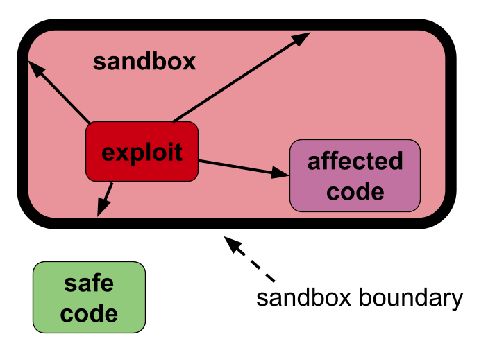
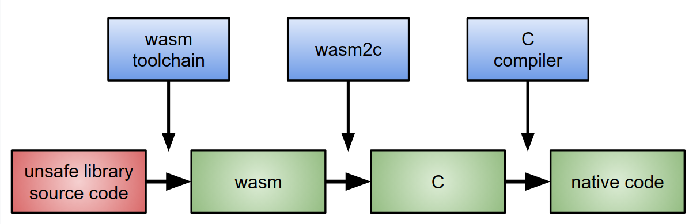
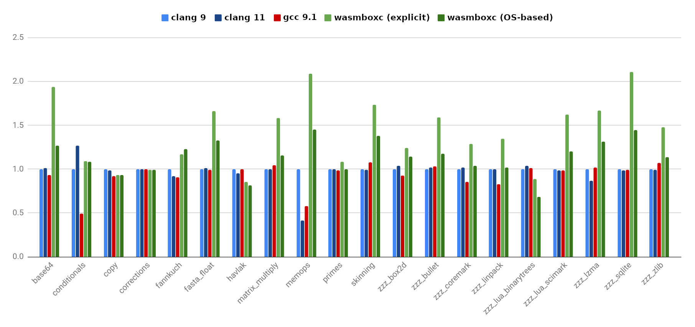

WasmBoxC / Alon Zakai / June 2021

|

|
📦
Background
Lots of useful but unsafe C/C++ code exists in the world, including in Chrome.
It would be nice if we could sandbox specific libraries (inside the renderer process) that we are worried about.
Exploits in the sandbox stay in the sandbox.

Can we do this?
# vvvvvvvvv
clang unsafe-library.c -o unsafe-library.o --sandbox
# ^^^^^^^^^
Not that simple, for various reasons:
- A special compiler is needed.
- Platform-specific (CPU and OS) runtimes are needed.
- Runtime overhead.
Usually big tradeoffs between these.
WasmBoxC
 wasm => C => native code" style="height: 7em">Wasm is sandboxed, and remains so when compiled to C!
Benefits
- All the work into Wasm toolchains is reused here.
- Can just use clang!
- Compiling to C allows us to compile and link it normally.
- wasm2c (written by Ben Smith) is very simple and has been fuzzed.
- No platform-specific code!
- Easy to see the C code is safe.
Is the catch that it's slow...? No!
42% overhead without OS support, only 14% with it.
This is fast because clang & LLVM are very very good at optimizing C code!
In fact, it even supports (safe!) LTO across the sandbox boundary, as it's all just C code.
Also, wasm has 32-bit "pointers" (for now), so we get some X32-like benefits on some benchmarks.
History (1/2)
- Ideas and experiments with Wasm VM sandboxing in Chrome (Bill Budge) and in Firefox.
- UCSD researchers experimented with wasm2c in Firefox (I was not aware of this at the time), but ended up shipping using Cranelift and Lucet.
- I wrote a blogpost about wasm2c as a sandboxing method, called that "WasmBoxC", and showed the speed + ease of use.
History (2/2)
- UCSD informed me of their initial wasm2c work and we connected.
- Firefox started to switch away from Lucet back to wasm2c (mainly due to portability problems with ARM).
- I and Bill interested the Chrome security people in wasm2c, and work with them is ongoing.
Current status
Both Chrome and Firefox may end up shipping WasmBox-ed libraries.
We and the UCSD people are starting to collaborate on improvements to wasm2c in wabt.
Conclusion
WasmBoxC is one of those things that feels "odd" but actually works well!
Mainly due to Wasm and C both being stable formats with huge amounts of investment in them, which we can leverage once wasm2c links them.
Thanks for listening!